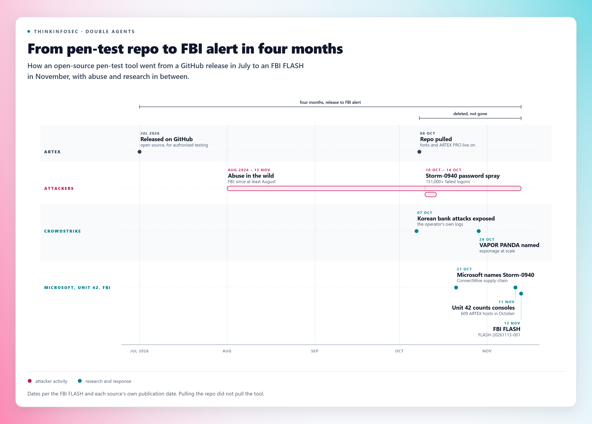
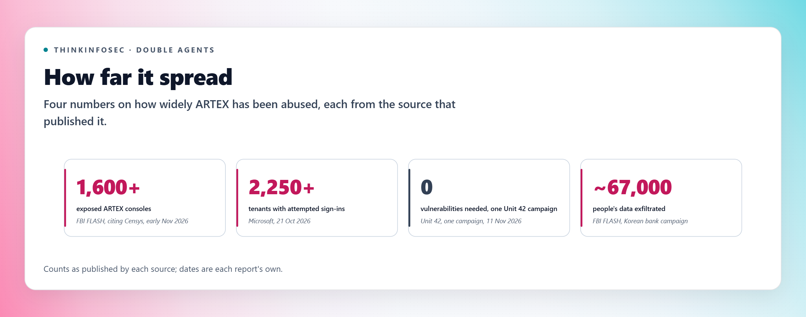
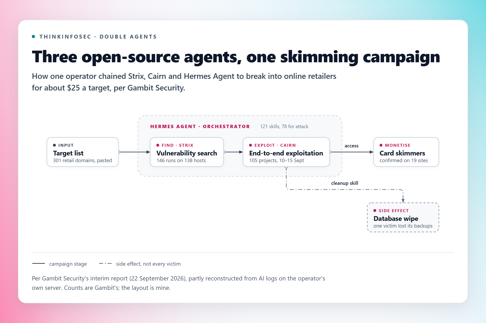
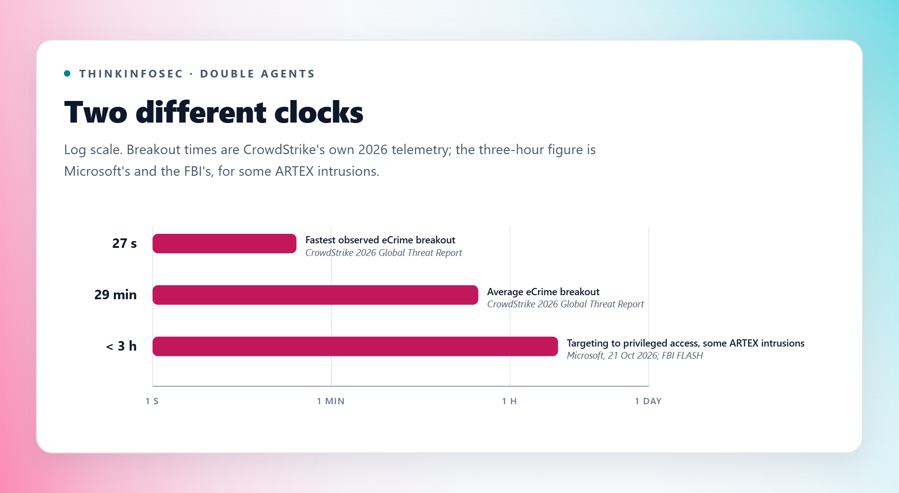
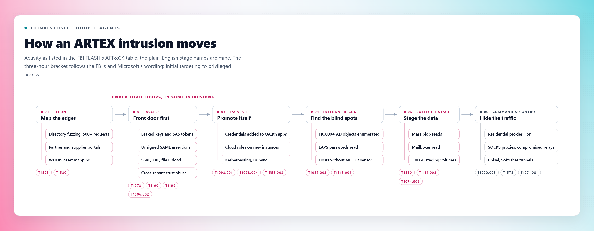
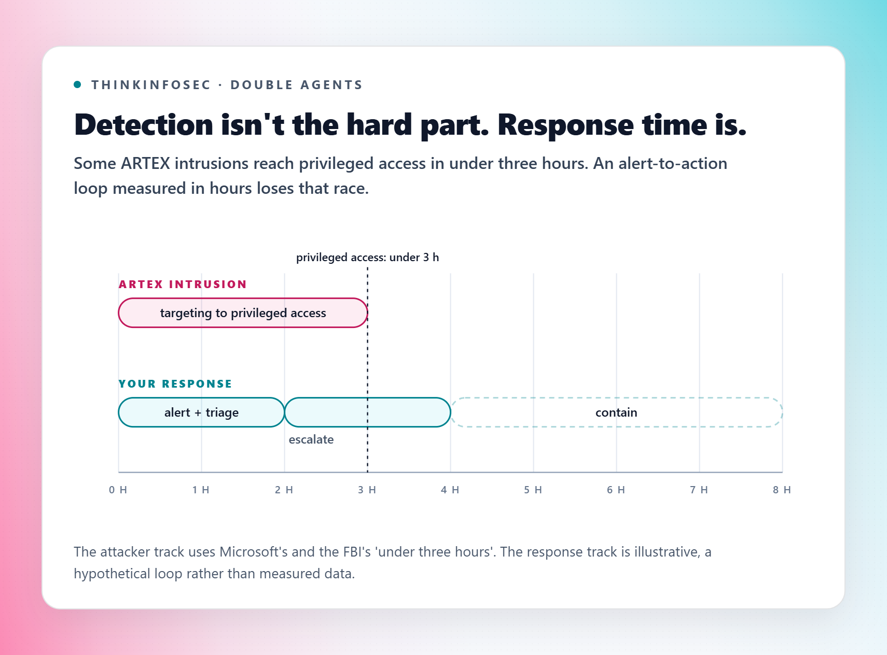
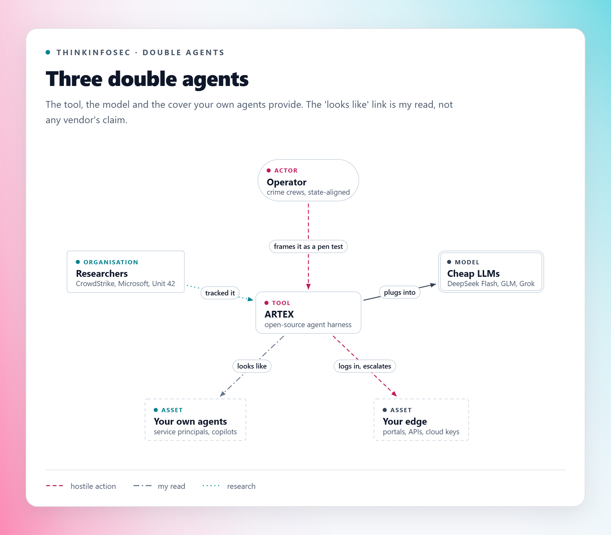

The briefing
Double Agents: ARTEX and the Day the Pen-Test Tool Switched Sides
A big part of my job right now is talking customers through AI-speed intrusion: how fast adversaries actually move, and what that looks like in telemetry. I do it with CrowdStrike's public research: the Global Threat Report from the Counter Adversary Operations team, and the Threat Hunting Report from the OverWatch hunters. They're the cleanest way I know to show people how fast the adversary is moving. Breakout times measured in minutes. Hands-on-keyboard intrusions that look less and less like hands on a keyboard.
Then in November the FBI put a name on it. On 13 November 2026 it released FLASH-20261113-001, a "Threat Overview of ARTEX Autonomous Penetration Testing Framework". It confirmed what the telemetry had been hinting at: the adversary isn't just using AI to type faster any more. It's handing the whole intrusion to agents.
So that raised a few questions worth answering properly, rather than in passing:
- What actually is ARTEX, and how did a red-team tool end up in an FBI alert?
- Is this an ARTEX problem, or a whole category of tools?
- How fast is "machine speed" really, and how does it square with the numbers I already show customers?
- What does an agentic intrusion look like from the defender's side of the glass?
- And what do we do about it, beyond panic-buying "AI security"?
(Disclosure up front: I work at CrowdStrike, and several sources here are CrowdStrike's own research. I've tried to give those numbers the same vendor discount I'd give anyone else's.)
Let's get into it then.
The tool
A tool built for defenders, now working for the other side
If you haven't come across it yet, ARTEX is an open-source, multi-agent penetration testing framework written in Go. According to the FBI's FLASH:
ARTEX is an open-source, large language model (LLM)-driven agentic platform that threat actors have weaponized to automate multiple phases of cyber intrusions at machine speed, from reconnaissance through data exfiltration.
The detail that matters most for everything that follows is that ARTEX doesn't ship with a model of its own. The FBI describes it as translating "high-level tactical goals described in natural language into actionable machine commands" executed by specialised agents, and plugging into whatever LLM the operator brings. That includes frontier models (Anthropic's Claude and OpenAI's GPT are both named) and open-source or Chinese-origin models (DeepSeek, GLM, Grok, Kimi).
Its origin story is the reason I couldn't resist the title. The FBI says a developer going by "Autumn-27" released it on GitHub in July 2026, and that it picked up an estimated 1,500–2,000 stars within ten weeks. The developer said it was intended for authorised security testing within defined scopes. That's a perfectly normal thing to build. Red teams have been automating recon and exploitation for years, and an agent that chains those steps together is the obvious next step.
The problem is that the tool doesn't care who's holding it. The FBI says malicious actors have been using ARTEX since at least August 2026, against financial services, government, technology, defence, healthcare, energy, telecoms, legal and more. That's how a red-team tool becomes a double agent: same code, same capability, new handler.
The timeline below shows how quickly that turned around, and how little difference pulling the repo made.


The developer took the repository down on 8 October 2026 after reports of abuse. Per the FBI, it hasn't mattered much. ARTEX "continues to proliferate through community forks, localized variations, archived copies, and a commercial version (ARTEX PRO)". CrowdStrike has since published a second ARTEX case, "VAPOR PANDA Uses AI-Driven ARTEX to Scale a Global Espionage Campaign" (29 October 2026), so it's not just financially motivated crews. Two counts of exposed instances give a feel for the scale, and they come from different sources at different times, so I'll keep them apart. Palo Alto Networks' Unit 42 counted 609 internet-facing ARTEX hosts as of October 2026, alongside 1,323 running a similar tool called CyberStrikeAI (21 hosts were running both). By early November, the FBI, citing Censys, puts it at over 1,600 publicly exposed ARTEX consoles, and notes the real number is likely "significantly higher" once you count deployments behind firewalls.


You can delete a repo. You can't un-publish a capability.
The models
The models are double agents too
This is the part I find most interesting, and it's a second meaning of the title. If ARTEX is just a harness, then the model behind it decides how much the agent will do. That's where guardrails are supposed to live.
The FBI's analysis of attacker-controlled instances found that Chinese models were the most prevalent, and explains why:
DeepSeek Flash family models dominating usage due to their balance of capabilities, relatively low cost, and lack of observable guardrails when framed for penetration testing.
Read that last clause again. When framed for penetration testing. The attacker doesn't need a jailbreak. They just tell the model it's a pen test, which is exactly what ARTEX was built to do. The model is being asked to do the job it was designed to help with, by someone who isn't authorised to ask. A model can't tell a contracted red team from a criminal crew when the prompt looks the same.
CrowdStrike's own write-up of a South Korean campaign (published 7 October 2026 by its Counter Adversary Operations team) shows what this looks like in practice. The researchers found the operator's open directories, and in them "Claude Code session histories, ARTEX configuration files, and Claude memory files", including a CLAUDE.md holding a Chinese-language pentesting prompt. Per CrowdStrike, the ARTEX instance ran DeepSeek v4.1-flash as its main backend, and the operator's other Claude Code sessions were pointed at GLM-5.3 and Grok 4.6 rather than at Anthropic's own models. That's an off-the-shelf coding agent harness, cheap models and an open-source attack harness, stitched together by someone CrowdStrike assesses (with moderate confidence) as a financially motivated Chinese speaker. The campaign ran from late September to early October 2026 and hit, among others, a bank's loan-progress inquiry service used by brokers and another bank's employee mobile work-support system. The FBI's summary, drawing on CrowdStrike, Zscaler and CERT-EU, puts the result at personal information from approximately 67,000 individuals exfiltrated.
Here's my favourite twist, and it's my read rather than anything CrowdStrike says. Agents keep notes. Session histories, memory files and config files are how these tools stay coherent across a long task, and they turned out to be exactly what told the defenders what the operator was doing. The double agent informed on its handler. I wouldn't count on that every time, but it's a good reminder that agentic tradecraft leaves a very different kind of trail from a human operator.
The landscape
Not the only double agent: the agentic framework landscape
ARTEX got the FBI FLASH, but it'd be a mistake to read this as a one-tool problem. ARTEX is just the best-known tool in a growing category, and the category is growing faster than anyone's signature set.
The best framing I've read on this comes from Florian Roth, Head of R&D at Nextron Systems, in "Beyond Framework Signatures: Understanding AI-Driven Intrusions" (29 October 2026). His argument is that these frameworks automate the attacker's decisions: what to look at, which tool to run, how to read the result and what to try next. That's why "framework coverage" is the wrong mental model, and why this isn't like tracking a new malware family. One of his section headings sums it up:
The framework is not the payload.
The framework runs on the attacker's side of the wire. What reaches you is requests, commands, scripts, payloads and system changes. Swap the model, the prompt or the skills, and two operators running the same framework can produce very different intrusions. Meanwhile, different frameworks can run identical commands and drop identical malware. As Roth puts it, "A webshell does not become an ARTEX-specific artifact because an ARTEX agent chose to deploy it." (Nextron sells compromise-assessment tooling built around exactly that idea, so it has a horse in this race. The argument still holds up on its own.)
With that in mind, here's the landscape as it stands in public reporting. The "type" column is my own sorting, not Nextron's:
| Framework | Type | What it is | Where it's turned up |
|---|---|---|---|
| ARTEX | Pen-test harness | Open-source multi-agent pen-test platform, released July 2026 | Storm-0940's ConnectWise campaign (Microsoft); South Korean banks and VAPOR PANDA (CrowdStrike); exposed hosts with attack tooling on them (AhnLab ASEC) |
| Cairn | Pen-test harness | "A general-purpose AI state-space search engine, validated first on autonomous penetration testing" (its README), AGPL-3.0 with a commercial licence | The exploitation stage of a retail card-skimming campaign (Gambit Security, below) |
| Strix | Pen-test harness | Open-source agentic app-security tester (Apache-2.0), with a commercial cloud version | Vulnerability search in the same campaign |
| CyberStrikeAI | Pen-test harness | Open-source AI pen-test tool | 1,323 internet-facing hosts (Unit 42, October 2026) |
| Villager | Pen-test harness | AI pen-test framework attributed to Cyberspike, published on PyPI in July 2025 | 10,030 downloads in about two months; Straiker found AsyncRAT integrated into Cyberspike's product |
| HexStrike AI | Pen-test harness | Orchestration layer that Check Point says directs 150+ specialised agents | Underground forums discussed using it against NetScaler within hours of release (Check Point, 2025) |
| Hermes Agent | General-purpose agent | Nous Research's MIT-licensed personal agent with a reusable skills system | Orchestrated the whole retail campaign |
| Claude Code | General-purpose agent | Anthropic's coding agent harness | Sat alongside ARTEX in the South Korean bank operation, pointed at GLM and Grok (CrowdStrike) |
| Norma | Agent engine | General-purpose agent library that ARTEX builds on | Per Nextron, "neither exclusive to ARTEX nor malicious on its own" |
Only the first six were built for offensive work. The last three are general-purpose tools that someone pointed at a target. That's the real shape of the landscape: the harness is interchangeable, and so is the model underneath it.
The clearest example of tools being mixed and matched is Gambit Security's interim report (Eyal Sela, 22 September 2026). Gambit recovered a financially motivated operator's staging server and found three open-source harnesses working together. Strix did the vulnerability search, Cairn did end-to-end exploitation, and Hermes Agent orchestrated the lot with 121 skills loaded, 78 of them for attack. Between 10 and 15 September, Gambit counts 105 attack projects launched and at least 27 companies compromised, with card skimmers confirmed on 19 of them. The mean cost was $25.46 per target across 101 completed scans. Gambit is upfront that some of this rests on the attacker's own AI logs, and that the real impact is probably larger.


Two details from that report tie straight back to the models section. Per Gambit, Hermes ran on Anthropic's Opus 4.6 "after newer models refused its requests", and the operator added a skill that stripped out Hermes's own content filters. My read is that guardrails on the newest model only go so far while the previous model is still an API call away. The second detail is the cleanup. A "Database Wipe After Extraction" skill erased card data, and at one bicycle retailer the cleanup dropped 180 tables, including the victim's backups. Gambit's line on that is worth pinning up somewhere: "Organizations planning against this should assume data loss can arrive as a side effect of someone else's cleanup routine."
So what about framework fingerprints? They exist, and they're worth having. Nextron, AhnLab and the ARTEX Global Edition's own defence guide all list user agents such as artex-selfupdate and norma/0.4, plus default ports and config markers. But AhnLab itself says user-agent detection is unreliable, and Norma's string isn't even ARTEX-specific. Fork the repo, change a string, and the fingerprint's gone. I'd treat framework signatures as a bonus catch, not a control. Roth makes the same point from the forensics side: "We do not need to identify the model or prompt before recognizing a malicious artifact." He also flags a quieter consequence for threat intel. When an agent picks the tradecraft, "the behavior generated during an intrusion will become a less dependable actor fingerprint on its own". Two crews sharing a skill pack will look alike.
Two clocks
So how fast is "machine speed"?
This is where it ties back to the numbers I show customers, and where it's easy to get confused, because two different clocks are in play.
The first is breakout time, which is CrowdStrike's measure of the gap between an adversary's initial access and their first lateral movement. According to CrowdStrike's 2026 Global Threat Report (published February 2026), the average eCrime breakout time dropped to 29 minutes, with the fastest observed at 27 seconds. The same report counts an 89% increase in attacks by AI-enabled adversaries compared with 2024. Those are CrowdStrike's own numbers from its own telemetry, so they get the standard vendor discount.
The second clock is the one in the ARTEX reporting, and it measures something different: initial targeting to privileged access. Microsoft's 21 October 2026 write-up attributes a ConnectWise supply chain compromise to Storm-0940, which Microsoft describes as "a China-state aligned actor", and says it saw:
multiple instances where the time from initial targeting to privileged access was less than 3 hours.
The FBI repeats that framing ("some intrusions progressing from initial targeting to privileged access in under three hours"). So the two numbers don't contradict each other. Twenty-nine minutes is from inside to moving. Three hours is from picking a target to owning admin, and that includes all the recon and access work a human crew might once have spent days or weeks on.


The scale is the other half of it. Per Microsoft, Storm-0940 used ARTEX to attempt to sign in to more than 2,250 downstream tenants. That's attempted, not compromised, and it's worth being careful there because some coverage has rounded it up. In a separate password spray between 10 and 14 October against 327 accounts across eight organisations, Microsoft logged 151,000+ failed logons and no successful authentication. That's the honest picture of agentic attacks right now: very noisy, very wide and very fast, with most attempts failing and a few landing in hours instead of weeks.
Unit 42's 11 November 2026 report adds some granularity at the fast end. It says ARTEX "can act on a stolen credential within a minute of finding it", and describes more than 200 client secrets validated in about three minutes. Those are Unit 42's own figures, and they line up with the speed claims in Microsoft's and the FBI's reporting.
One timing caveat that matters if you're quoting CrowdStrike's numbers next to ARTEX. The 2026 Global Threat Report and the 2026 Threat Hunting Report (released 3 August, covering July 2025 to June 2026) both predate ARTEX's July release. CrowdStrike's 2026 report data didn't measure ARTEX. It showed the trend that ARTEX then packaged up and handed to anyone with an API key.
The intrusion
What an agentic intrusion looks like
The FBI FLASH includes a fairly long table mapping observed ARTEX activity to MITRE ATT&CK. I've laid it out as six stages below, with the actions and ATT&CK techniques the FBI lists under each. The stage names are mine. The activity is the FBI's.


A few things in that table are worth pulling apart.
It goes after the edges, not the crown jewels. The FBI says ARTEX "excels at identifying and exploiting peripheral systems receiving less security attention than flagship applications". It lists partner and supplier portals, mobile backends, employee apps, sales-support systems, legacy services and things built by other business units. An agent doesn't get bored. It'll methodically try every forgotten subdomain a human pen tester would skip at 4pm on a Friday.
It logs in more than it breaks in. The FBI table does list classic web flaws: SQL injection, XXE, SSRF, server-side template injection. But a lot of the initial access is valid accounts, leaked keys, hardcoded admin passwords in JavaScript bundles, unsigned SAML assertions and abused cross-tenant trust. Unit 42's campaign is the extreme case. It saw this activity across multiple organisations "without exploiting a single software vulnerability", turning public password-reset pages and exposed APIs into cloud access. That's Unit 42's campaign specifically, not every ARTEX intrusion, but it tells you where to look first.
It checks where your sensors aren't. This one made me sit up, for obvious reasons. Under internal recon, the FBI lists that the agent "inventoried endpoint sensor coverage to identify Windows machines without CrowdStrike Falcon". The same table notes that attempted lateral movement to domain controllers (Pass-the-Ticket, WinRM, Kerberos relay, Pass-the-Hash) was "blocked by endpoint protection". The FBI doesn't name whose protection, so I won't spin that one. The point I'd take into any customer conversation, whatever's on your endpoints, is that the agent is actively mapping your coverage gaps. An unmanaged host is something it goes looking for, not something it stumbles across.
It's noisy, and that doesn't save you. The FBI says ARTEX generates "high volumes of forensically noisy traffic that may trigger alerts, but attack speed provides limited time for coordinated defender response before objective completion". Detection isn't the hard part here. Response time is. If your alert-to-action loop is measured in hours, you're losing a race the attacker finishes in under three.


Your agents
The third double agent: your own agents
Here's the reading of the title that I think matters most over the next year, and it's my own synthesis rather than any one report's claim.
CrowdStrike's 2026 Threat Hunting Report was the first edition to count automated attacks alongside interactive, hands-on-keyboard intrusions. That's a methodology change in itself, and it tells you how the hunters see the problem. It also reported that during parts of Q1 2026, detection leads triggered by AI agents ran at 2.5 times the rate of human-triggered leads. That's a CrowdStrike number from a specific window, not a full-year figure, so treat it accordingly. But the direction is hard to argue with. Your estate is filling up with legitimate agents: coding assistants, automation, copilots, service principals doing things at machine speed on someone's behalf.
So when an ARTEX agent logs in with a stolen service-principal secret, enumerates the tenant through Microsoft Graph and adds a credential to an OAuth app, what does that look like in your logs? Uncomfortably like one of your own agents doing its job. The attacker's agent hides in the noise your agents make. That's the double agent problem in its purest form. It's not a foreign body. It's indistinguishable from staff.


That's also why I keep saying in customer conversations that AI security isn't one product. It's identity, cloud posture, endpoint, data and the agents themselves all at once. Every vendor (mine included) covers part of that today. That isn't a failure. It's how security tech always evolves: the capability gets funded and shipped first, and the controls catch up. ARTEX is what happens in the gap.
What to do
Architecting for Effective Solutions
The good news is that almost none of this needs exotic new controls. The FBI and Unit 42 recommendations are largely hygiene, applied with more urgency and more completeness than most of us manage. In order, this is where I'd start:
- Inventory your edges, all of them. The FBI's first recommendation is to inventory every internet-facing app, explicitly including partner portals, mobile backends, employee apps, legacy services and anything another business unit spun up. If you don't know it exists, an agent will find it first. Worth pairing this with Unit 42's advice to remove "machine-readable attack maps": public OpenAPI specs, source maps and config files with tokens in them.
- Kill long-lived secrets. ARTEX feeds on leaked keys, SAS tokens, storage account keys and hardcoded passwords. Move to role-based access, put secrets in a secrets manager, and scan repos, images, pipelines and build artifacts continuously. Unit 42 says ARTEX can act on a credential within a minute of finding it, so "we'll rotate it next sprint" isn't a plan.
- Require authentication on every write endpoint. That includes dev and staging. Rate-limit and bot-protect registration, password reset and verification flows. Remove unauthenticated account-existence checks. Unit 42's campaign got into the cloud through password-reset pages and exposed APIs without a single CVE.
- Watch your non-human identities like they're privileged users, because they are. The FBI calls out monitoring credential additions, privilege assignments, consent grants and anomalous app-only activity. Review successful and failed service-principal sign-ins separately, and search by application ID, not display name. That's where the Storm-0940 campaign lived.
- Close your sensor coverage gaps. The agent is literally enumerating which hosts aren't protected. Whatever endpoint platform you run, run a coverage report this week and treat every unmanaged Windows host as the agent's preferred landing spot.
- Hunt behaviour, not indicators. Unit 42 puts it bluntly: "Because the framework is open source and widely forked, indicator-based detection will not keep up." Build detections around operator behaviour, such as first use of a cloud key from a new IP, write-then-delete storage tests, canary usernames in IdP logs and bursts of Graph enumeration. Then hunt for what the intrusion leaves behind (webshells, loaders, new persistence, credential-harvesting tools), because those look the same whichever framework or model chose them. Keep the ARTEX and Norma user-agent rules too, but as a bonus catch, not a strategy. And get honest about your response clock. If containment takes longer than three hours, that's the number to work on.
- Baseline your own agents. This is the forward-looking one. If you can't tell your own agents' normal behaviour from an attacker's agent, you can't catch the double agent. Start inventorying the agents and service principals running in your environment, what they're allowed to touch, and what "normal" looks like for each.
All of this to say: the attacker got an automation upgrade. Our job is to make sure the agent finds nothing worth chaining together, and that if it does, we notice inside the window.
Learn more about my Cloud and Security Projects: ThinkInfoSec · LinkedIn
Thank you for reading and leave your thoughts/comments!